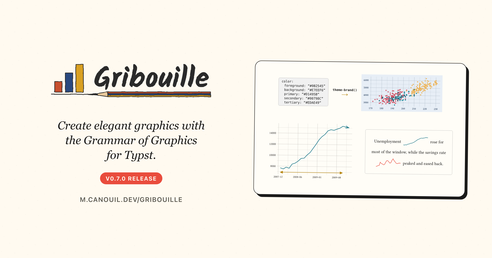

Latest
Gribouille 0.7.0: A Theme from Your Brand, and Plots That Fit
Gribouille 0.7.0 builds a theme from a parsed _brand.yml, so a document’s plots follow the same brand as its prose. A plot now draws at any size that gives it room to draw, keeps to the width and height you set, and says how much room it needs when it cannot. The line geoms take arrowheads through the new arrow() helper, a log axis places and labels its breaks as powers, and large plots draw several times faster. The breaking changes are the new arrow specification and the plots that now fail instead of drawing past their canvas.
typstquartogrammar-of-graphicsgribouille